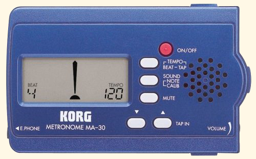
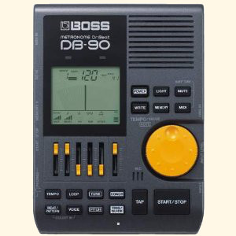

Develop Skill and Speed by Selecting the Right Metronomes!
Lesson One Continued:
Metronomes are timing devices that click or beep a steady rhythm and allow a musician to practice keeping a steady tempo and playing accurate rhythms. "Beats per minute" (bpm) is the standard reference for how fast or slow the beep or click is going.
Getting a quality unit to practice with is absolutely essential to developing your drumming skills. As a drummer, if you cannot keep a steady tempo and play accurate rhythms - GAME OVER - no one will want you playing drums with them!
Wind-up Pendulum Style
Just for nostalgia, let's look at the good old-fashioned wind up device of the past.

This is what was sitting on my piano teacher's piano every week when I went to lessons as a young boy. They are actually pretty cool, and if in working order, they are very reliable.
If you already own one of these - or if your grandma owns one - you can certainly use it. If you are going to buy, I wouldn't recommend one of these. The limitations are obvious.
Electronic Metronomes
Today's metronomes are electronic, digital and take advantage of all the latest technology.
A very satisfactory unit can be purchased for about $20. Or you can get really fancy and easily spend over $100. If you don't have 20 bucks, you can use applications for free right off the internet that work well.
Korg MA-30
My top recommendation for affordability AND functionality is the Korg MA-30.
The Korg MA-30 has many great features:
- All the subdivision and rhythm variation features you need.
- Easy to read display.
- Volume control
- Headphone jack
- Great price tag!
There are other inexpensive options similar to this on the market, but for the price, this one is my favorite!
"Dr. Beat" by Boss
My next recommendation is the "Dr. Beat" by Boss.
This met is a big leap to the high end costing around $175.
It has all the same basic features as the Korg MA-30 and more. The biggest difference is its larger size. The display, buttons and controls are larger and easier to use. It can also be mounted on the top of a cymbal stand, which is nice. It is simply a higher quality, more substantial piece of equipment.
Free Online Timing Tools
If you can't spare the $20 right now, or you want to get your hands on something immediately, there are free online applications that work quite well. They are usually pretty basic, but will certainly do the job to get you started.
You can search around on the internet and explore many options, but the very good one I have found is here.
How to Use a Metronome
Throughout all the free lessons on my website, I will discuss in great detail how to use a these tools effectively in your practice and technique development.
Developing control over tempo and being able to keep a steady beat is the lifeblood of being a great drummer.
Other Gear and Equipment for Success
It is a common mistake to think that drumming is all about having the coolest set of drums on the block. All drummers love owning great drums, but this will not make you a great player. The tools I have mentioned so far are the most important to get you started. In future lessons we will give you guidelines for purchasing drums, hardware, and other equipment.
Enough of the preliminaries. Let's get started with Lesson Two!
 Randall Beach, Creator of DrummingExpert.com
Randall Beach, Creator of DrummingExpert.com